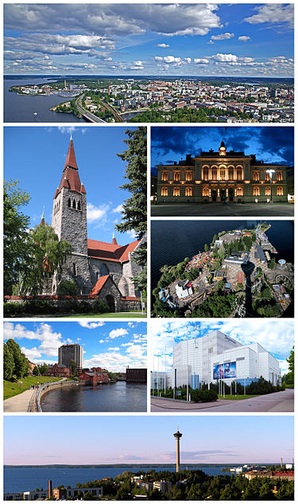

Tampere
is a city in the Pirkanmaa region, located in the western part of Finland. Tampere is the most populous inland city in the Nordic countries. It has a population of 244,029; the urban area has a population of 341,696; and the metropolitan area, also known as the Tampere sub-region, has a population of 393,941 in an area of 4,970 km2 (1,920 sq mi). Tampere is the second-largest urban area and third most-populous individual municipality in Finland, after the cities of Helsinki and Espoo, and the most populous Finnish city outside the Greater Helsinki area. Today, Tampere is one of the major urban, economic, and cultural hubs in the whole inland region.
Tampere and its environs belong to the historical province of Satakunta. The area belonged to the Häme Province from 1831 to 1997, and over time it has often been considered to belong to Tavastia as a province. For example, in Uusi tietosanakirja published in the 1960s, the Tampere sub-region is presented as part of the then Tavastia Province. Around the 1950s, Tampere and its surroundings began to establish itself as their own province of Pirkanmaa. Tampere became the center of Pirkanmaa, and in the early days of the province, Tammermaa was also used several times in its early days - for example, in the Suomi-käsikirja published in 1968.[16] Tampere is wedged between two lakes, Näsijärvi and Pyhäjärvi. Since the two lakes differ in level by 18 m (59 ft), the rapids linking them, Tammerkoski, have been an important power source throughout history, most recently for generating electricity. Tampere is dubbed the "Manchester of the North" for its past as the center of Finnish industry, and this has given rise to its Finnish nickname "Manse"[1] and terms such as "Manserock". Tampere has also been officially declared the "Sauna Capital of the World", because it has the most public saunas in the world.
Helsinki is approximately 160 km (100 mi) south of Tampere, and can be reached in 1 hour 31 minutes by Pendolino high-speed rail service and 2 hours by car. The distance to Turku is roughly the same. Tampere–Pirkkala Airport is Finland's eighth-busiest airport, with over 230,000 passengers in 2017. Tampere also serves as an important transit route for three Finnish highways: Highway 3 (E12), Highway 9 (E63) and Highway 12. Tampere ranked 26th in the list of 446 cities in the world's hipster cities, and it has often been rated as the most popular city in Finland. The positive development of Tampere and the Tampere metropolitan area has continued throughout the 21st century, which is largely due to Tampere being one of the most migratory and attractive cities in Finland